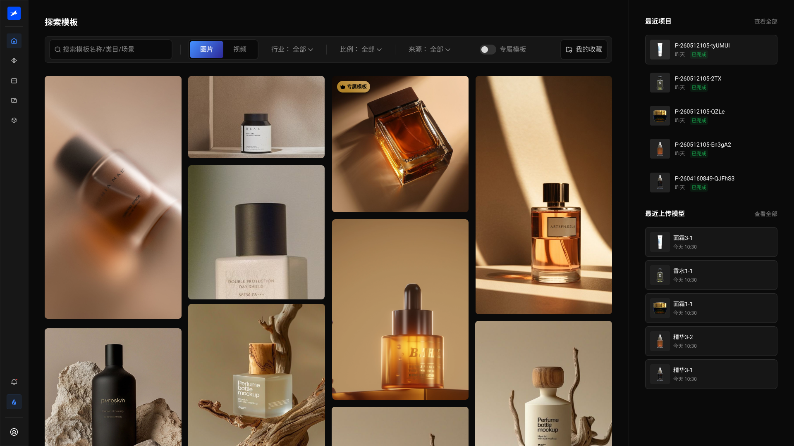

先看结果方向，再进入具体配置。
01 / AI PRODUCT CASE STUDY
B.THREE.AI CONTENT PLATFORM
将复杂的 3D 与 AI 工作流，转化为清晰、可控、可交付的商品内容生产体验。
B.THREE 面向品牌与电商内容团队，将 3D 商品资产、内容模板与 AI 图片 / 视频生成整合成一条可交付的生产链路。我负责从需求、信息架构、交互到设计系统与开发落地的完整产品设计。
先了解这个项目 ↓02 / PROJECT OVERVIEW
一套面向品牌内容团队的 B 端 AI 生产平台。
用户先从内容模板确认想要的画面，再在模板中选择系统示例模型、已有商品模型或本地上传；没有模型时，也可以进入扫描建模服务。模型就绪后，用户完成位置与输出配置，生成图片或视频，并将结果沉淀为项目资产。
- 项目类型
- B 端 AI 商品内容生产平台
- 服务对象
- 品牌方｜电商内容团队｜平台服务人员
- 项目阶段
- 从 0 到 1｜正式上线｜持续迭代
- 我的职责
- 产品体验｜UI 视觉｜设计规范｜前端验证
系统示例、已有模型与本地上传共享一个入口。
用实时预览承接位置、比例与输出设置。
统一查看任务状态、结果版本与下载内容。
03 / PRODUCT CHALLENGES
问题不在于能不能生成，而在于怎样把生成变成生产。
品牌与运营用户不需要理解底层 3D 和 AI 技术。他们需要先看见目标效果，快速开始，再在必要时获得足够控制。
让用户先看到可能的结果，再逐步补齐商品模型与生成配置。
先准备资产，用户很难想象结果
如果任务从上传与建模开始，用户要先投入成本，却还不知道能做出什么。入口需要先展示模板和产出方向。
快速体验与真实生产，需要共用一条路
系统示例模型帮助用户立即体验；自己的模型、上传与扫描服务承接真实任务，但不能因此拆成多套流程。
简单操作与专业控制，必须同时存在
位置、旋转、缩放和输出规格不能全部隐藏，也不能直接暴露技术参数，需要被转译成可预览、可判断的操作。
04 / KEY DESIGN DECISIONS
四个决定，把复杂能力收进一条清晰路径。
选择不同决策，查看它解决的问题、界面证据与最终带来的产品变化。

DECISION 01 / ENTRY
先选择内容模板，再补齐商品模型。
用户首先看见可以产出的画面与内容类型，在确认方向后进入模板编辑，再选择自己的商品模型。
- 解决
- 避免用户在还看不到结果时，就先处理上传与建模成本。
- 结果
- 任务入口从“我有什么资产”转向“我想做什么内容”。
05 / DELIVERED PRODUCT FLOW
从想要的画面出发，逐步完成真实生产。
点击下方五个阶段，查看用户如何从模板进入任务，并在需要时选择系统示例、自己的模型或扫描服务。
设计决策让模板成为任务入口，先帮助用户判断内容方向，再逐步暴露模型与生成配置。
06 / DESIGN SYSTEM & HANDOFF
用统一的对象、状态与组件支撑持续生产。
模型、模板、项目和生成结果都有清晰状态；界面组件、交互反馈与开发验收围绕同一套规则持续迭代。
近黑工具界面承载高密度任务，品牌蓝只提示主操作与当前状态，语义色负责区分进行中、成功与失败。

让相同操作在不同生产环节保持一致，减少学习成本与开发偏差。

统一业务对象与状态语言，为后续模型来源和生成能力扩展留下结构基础。
07 / MY AI-ASSISTED WORKFLOW
AI 加速推演，判断与交付仍由我负责。
我把真实需求、业务规则和设计规范整理成上下文，让流程、异常分支与原型更早进入讨论；再由我完成业务取舍、体验整合、规范校准与开发验收。
- 01输入上下文
需求、角色、业务规则与验收标准
- 02并行推演
流程分支、异常状态与原型骨架
- 03设计收敛
调用既有规范形成可讨论方案
- 04真实验证
前端验证、跨团队评审与最终交付
08 / DELIVERY & OUTCOME
从复杂技术能力，到真实可用的生产工具。
- 01
完成正式上线与开发交付
B.THREE 已完成开发交付并正式上线，核心链路覆盖模型准备、模板选择、内容生成和项目资产沉淀。
- 02
进入真实品牌项目
平台从内部验证进入实际商品内容生产场景，开始承担真实的图片与视频内容任务。
- 03
建立可持续扩展的产品基础
统一的业务对象、状态和组件体系，让新的模型来源、模板与生成能力能够沿用同一条产品路径继续扩展。